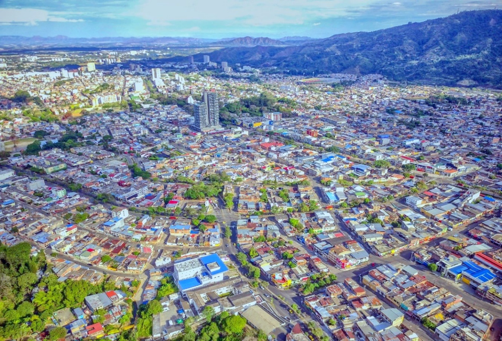

El área urbana de Ibagué, según el Plan de Ordenamiento Territorial (POT) adoptado en 2014 por medio del decreto municipal 1000-0823 de 23 de diciembre de 2014, alberga una población cercana a los 468.100 habitantes distribuidos en más de 156.050 hogares, ocupando aproximadamente 126.000 viviendas. Entre 2000 y 2014, la ciudad experimentó una expansión significativa de su suelo urbanizado, así como un crecimiento poblacional continuo, impulsado por procesos de densificación y ocupación informal en las periferias.
La estructura vial urbana tiene aproximadamente una longitud total de 175,6 Km. De esta, el 14,23% corresponden a vías en mal estado con daños considerables o totalmente destruidas, el 43.1% se encuentra en condiciones regulares, el 23.5% en buen estado y el 5.0% en excelente estado.
De forma complementaria a ello, se evidencian desequilibrios en conectividad, especialmente en los bordes urbanos y en sectores con presencia de barreras naturales como las rondas de quebradas o topografía escarpada. La cobertura de andenes y rutas seguras para peatones es limitada, lo que restringe la accesibilidad universal.
Ilustración 1. Imagen aérea Ibagué, Tolima
En cuanto a equipamientos colectivos, el POT identifica más de 400 infraestructuras destinadas a servicios educativos, de salud, cultura, deporte y recreación. Estos se concentran en la zona centro-sur, mientras que las comunas periféricas presentan déficit en acceso y calidad. El espacio público efectivo asciende a cerca de 2,6 millones de metros cuadrados, pero su distribución es desigual y con limitaciones en continuidad y mantenimiento. Aproximadamente 5,5 m² de espacio público efectivo por habitante en el año 2014. Este valor está por debajo del estándar mínimo recomendado por la Organización Mundial de la Salud (OMS), que sugiere al menos 10 m² por habitante. Esto refleja uno de los principales retos urbanísticos identificados en el POT: incrementar y redistribuir equitativamente el espacio público en la ciudad.
Algunas cifras relevantes:
- Expansión del suelo urbanizado: De 3.100 ha en 2000 a 4.102 ha en 2014 (+32%).
- Crecimiento poblacional: De 435.453 hab. (2005) a 476.285 hab. (2018).
- Procesos de densificación: Renovación y transformación urbana en suelo ya ocupado.
- Ocupación informal en periferias: Especialmente en Comunas 8, 9 y 13.
Los objetivos de desarrollo territorial del POT 2014 apuntan a consolidar una ciudad compacta, equitativa y ambientalmente sostenible, mediante la integración del territorio urbano y rural, la estructuración de una red jerarquizada de equipamientos, y la promoción de centralidades multifuncionales. Además, se prioriza la mejora de la accesibilidad, el fortalecimiento de la infraestructura verde, y la garantía del derecho a la ciudad, bajo el marco de una planeación resiliente y orientada al bienestar colectivo.